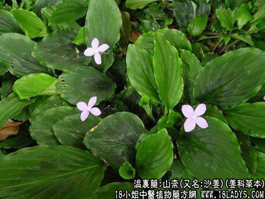

【中药概述】山柰，别名三奈子、三赖、三柰、山辣、三藾、沙姜，为姜科草本植物山柰的根茎。辛、温。归胃经。 1．温中消食止痛：用于心腹冷痛，胃痛，胃胀，停食不化，牙痛，跌打损伤等。 2．治骨哽：用于鱼骨鲠喉。并用作调味品。 【临证应用】停食不化。用山柰，丁香，当归，甘草等份为末，每服10g。 【药理作用】现代研究，用治急性胃肠炎，风湿性关节痛等症。 【化学成分】含挥发油、桉油精、桂皮酸、黄酮、香豆精类等。 【用量用法】3——8g，水煎服，或入丸、散剂。
本文解释权归中药大全，本文地址https://www.daquan.com/post/1944.html